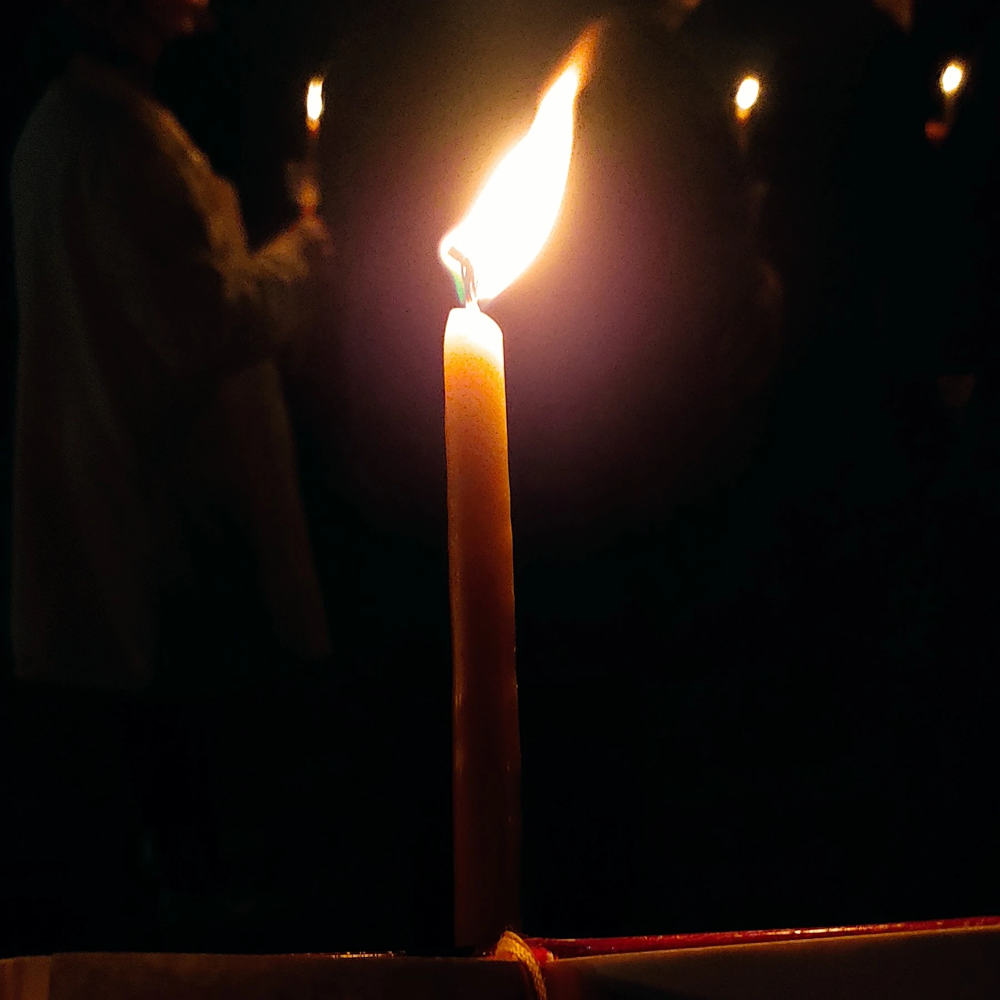
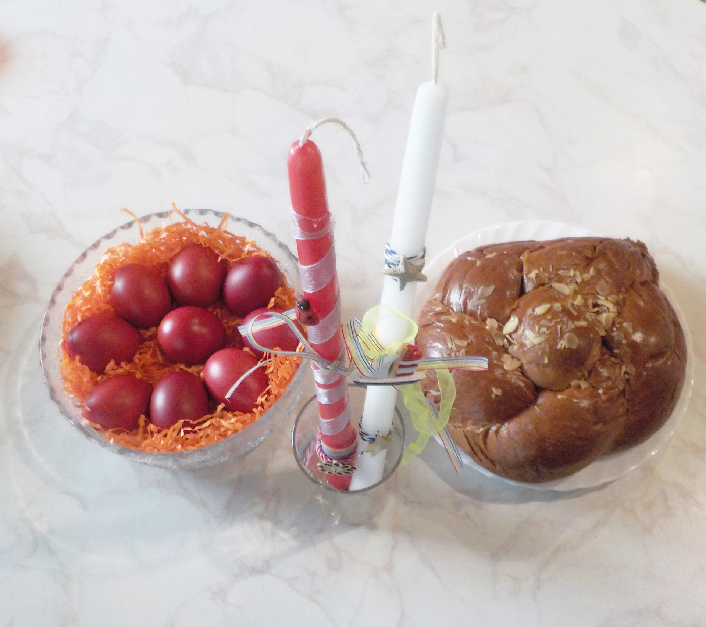
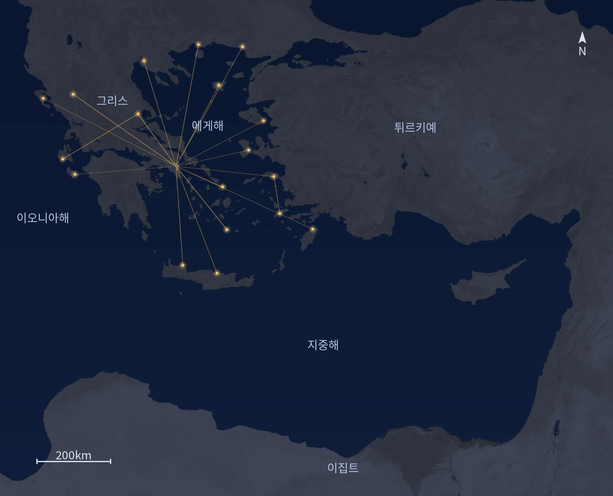
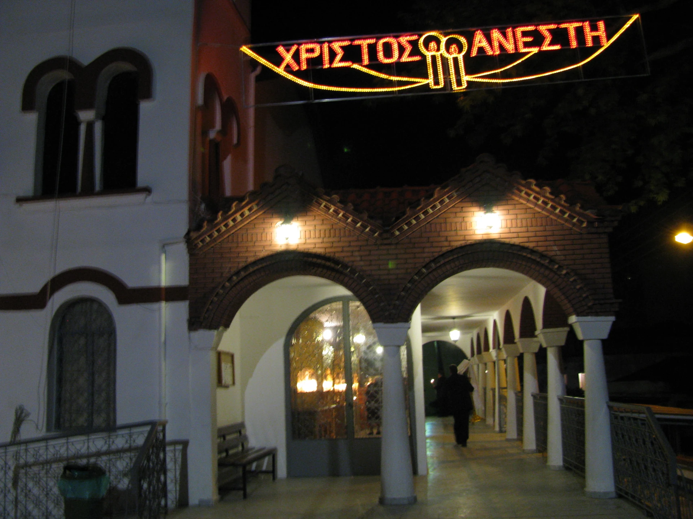
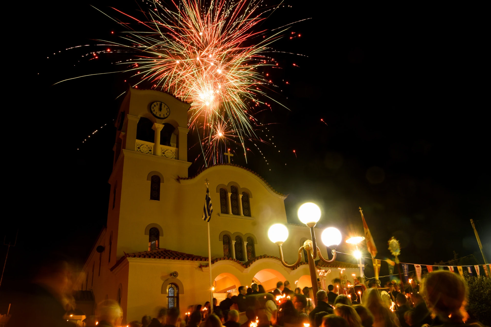

아직 펼치지 않은 카드어둠 속에 번지는 불 · 2그리스 부활절 한밤의 촛불부활절 전날 자정, 그리스 교회의 불이 모두 꺼져요. 그다음 무슨 일이 일어날까요?깜깜한 밤에 촛불 하나가 모두에게 번진대!
2026년 4월 11일 · 성토요일 밤예루살렘에서 그리스의 섬까지
그리스 부활절 한밤의 촛불
그리스의 부활절 전날 자정, 불 꺼진 교회에서 사제가 촛불 하나를 들고 나와요. 그 불은 그날 낮 예루살렘에서 켜져, 비행기를 타고 바다를 건너왔어요. 2026년 4월 11일, 그 불이 건너간 길을 따라가 보세요.
부활절 전날 밤, 그리스 교회의 촛불은 멀리 예루살렘에서 비행기를 타고 왔대. 같이 따라가 볼까?
검수 전 시안이에요(기준서 2판 · 초벌). 장면에는 그리스 외교부와 아테네시의 안내, 2026년 보도, 예식서에 있는 것만 옮겼어요. 예루살렘의 불이 어떻게 켜지는지는 믿음에 따라 생각이 달라, 누가 그렇게 믿는지 밝혀 적었어요. 상상은 ‘눈 감고 상상해 보기’에만 썼어요.
시안 확인용카드 단계 미리 보기
1
대부모가 건넨 하얀 초
그리스에서는 부활절 전날 밤이면 거의 모든 사람이 하얀 초를 들고 교회로 가요. 교회 안에는 밤 10시나 11시부터 사람들이 모이고, 들어가지 못한 사람들은 자정이 가까워지면 마당과 길에 모여요.
아이들의 초는 리본과 부활절 그림으로 꾸민 ‘람파다’예요. 세례 때 아이의 믿음을 돌봐 주기로 약속한 어른, 대부모가 선물하는 초예요.

부활절 전날 밤, 아이들은 리본 달린 예쁜 초를 들고 교회에 가. 대모님, 대부님이 선물해 준 초야.
물어보기네 초를 꾸민다면 무엇을 달고 싶어?
2
불이 건너온 길
그 밤, 사제의 초에 붙을 불은 어디서 올까요? 그리스 사람들은 그 불을 예루살렘에서 가져와요.
부활절 전날 낮, 예루살렘의 부활 성당에서 ‘거룩한 빛’ 예식이 열려요. 부활 성당은 예수의 무덤 자리에 세운 교회예요. 2026년 4월 11일, 그 불이 바다 건너 그리스의 섬까지 간 길을 ‘다음 곳으로’를 눌러 따라가 보세요.
‘다음 곳으로’를 눌러, 2026년 4월 11일 그 불이 간 길을 따라가 보세요.

예루살렘아테네키오스2026년 4월 11일 성토요일, ‘거룩한 빛’이 건너간 길 · 가는 선은 아테네에서 떠난 비행 열여덟 편 · 이 안내서가 그린 길잡이 지도 · 바탕: NASA 블루 마블(퍼블릭 도메인) · 비행 일정: 프로토테마·그릭 시티 타임스(2026년 4월 9일)
자정이 가까워지면, 섬과 마을의 교회마다 불이 모두 꺼져요. 사제가 이 불에서 초 하나를 밝혀 들고 나와요.
그날 밤 아테네에서는 비행기 열여덟 편이 섬과 도시로 이 불을 날랐어요. 지도의 가는 선들이 그 길이에요. 비행기가 닿지 않는 곳은 차로 날랐어요.
사제님 초의 불은 멀리 예루살렘에서 비행기를 타고 왔대! 바다를 건너서!
물어보기불이 바다를 건너 우리 동네까지 온다면, 누구한테 제일 먼저 나눠 줄래?
3
“와서 빛을 받으라”
자정 직전, 교회 안의 불이 모두 꺼져요. 무덤 속 같은 어둠이에요. 사제가 제단 위 꺼지지 않는 등잔에서 하얀 초 하나를 밝혀 들고, 성화벽(이콘을 건 칸막이 벽)의 가운데 문으로 나와 초를 높이 들고 노래해요.

“와서 빛을 받으라, 저물지 않는 빛에서. 그리고 죽은 이들 가운데서 부활하신 그리스도를 찬양하라.”
부활 예식의 노래 「와서 빛을 받으라」 · 그리스어를 이 안내서가 옮김
맨 앞 사람들이 사제의 초에서 불을 받아, 옆 사람과 뒷사람의 초로 건네요. 불은 옆으로, 뒤로, 문밖 마당으로 번져 가요. 초 하나의 불이 금세 모든 사람에게 건너가요.
깜깜해! 신부님 초 하나만 반짝. 그 불이 옆 사람한테, 또 옆 사람한테 건너가!
물어보기깜깜하던 교회에 작은 불이 하나둘 켜지면 어떻게 보일까?
4
“크리스토스 아네스티!”
자정이 되면 사제가 외쳐요. “크리스토스 아네스티(그리스도께서 부활하셨다)!” 사람들이 함께 노래해요.

“그리스도께서 죽은 이들 가운데서 부활하셨네. 죽음으로 죽음을 짓밟으시고, 무덤 속에 있는 이들에게 생명을 주셨네.”
부활 찬송 「그리스도께서 부활하셨네」 · 그리스어를 이 안내서가 옮김
온 동네의 종이 울리고, 하늘에서는 불꽃이 터져요. 사람들은 서로 “크리스토스 아네스티!” 하고 인사하고, “알리토스 아네스티(참으로 부활하셨다)!” 하고 답해요. 그리스 사람들은 이 인사와 함께 나누는 입맞춤을 ‘사랑의 입맞춤’이라고 불러요.
이 인사는 부활절부터 예수 승천 축일까지 40일 동안 ‘안녕하세요’ 대신 쓰여요. 한국 정교회는 “그리스도께서 부활하셨습니다!” “참으로 부활하셨습니다!”라고 인사해요.
“크리스토스 아네스티!” 하면 “알리토스 아네스티!” 하고 답해. 종이 땡땡, 불꽃이 펑펑!
물어보기우리말로 부활 인사를 해 볼까? “그리스도께서 부활하셨습니다!” 그러면 뭐라고 답할까?
5
문 위의 그을음 십자가
예배가 끝나면 사람들은 불이 켜진 초를 들고 집으로 걸어가요.
집 문 앞에 이르면 촛불을 문 위로 들어, 그을음으로 십자가를 세 번 그어요. 집을 축복하는 표시예요. 그 불로 집 안 이콘 앞의 등잔을 밝혀, 다음 부활절까지 꺼뜨리지 않으려는 집도 있어요.
켜진 초를 들고 집으로 가. 문 위에 촛불 연기로 십자가를 그려!
물어보기꺼지지 않게 들고 온 불로, 너는 무엇을 밝히고 싶어?
눈 감고 상상해 보기
깜깜한 교회 마당, 수백 명이 숨을 죽이고 있어요. 녹은 밀랍 냄새. 성화벽의 문이 열리고, 불꽃 하나가 높이 들려요. 옆 사람이 내 초에 불을 기울여 주며 속삭여요. “크리스토스 아네스티.” 나도 뒷사람에게 초를 기울여요. 자정의 종이 울리기 시작해요.
눈을 감아 봐. 깜깜한 마당이야. 저기 불 하나가 반짝! 옆 사람이 내 초에 불을 붙여 줘. 이제 내가 뒷사람한테 건네줄 차례야.
나의 자리
처음에 본 그 촛불이에요. 이제는 이 작은 불꽃 뒤로, 예루살렘에서 바다를 건너온 길이 보여요.
1,200km를 날아온 불도 마지막에는 바로 옆 사람의 초로 건너가요. 내게 온 작은 불꽃을, 나는 누구의 초로 건네고 싶나요?
불을 나눠 주면 내 불은 작아질까, 그대로일까?
마음에 닿는 한 줄을 고르거나 직접 써 보세요. 한 줄을 남기면 이 자리의 도장이 찍혀요. 이 기기에만 저장돼요.
더 깊이
궁금한 칸만 펼쳐 읽어도 괜찮아요.
기록마다 다른 점
예루살렘의 불 정교회 신자들은 예루살렘 총대주교가 그리스도의 무덤 안에서 기도할 때 이 불이 켜진다고 믿어요. 이 불이 어떻게 켜지는지에 대해서는 믿음에 따라 생각이 달라요.
첫 불 그리스 외교부의 안내는 사제가 사람들에게 나눠 주는 불을 ‘거룩한 빛’이라고 적어요. 예식서는 사제가 ‘제단 위 꺼지지 않는 등잔’에서 초를 밝힌다고 적어요.
자정과 저녁 그리스에서는 자정에 부활을 알리지만, 서울 마포구 아현동의 성 니콜라스 정교회 대성당은 2026년에 성토요일 밤 8시부터 부활 예식을 시작했어요.
함께 읽는 말씀
말씀은 뜻만 옮기고, 본문은 대한성서공회 개역개정으로 이어 드려요.
마가복음 16장 1~8절 이른 새벽 여인들이 무덤에 가 보니 돌이 굴려져 있었고, 흰옷 입은 청년이 “그는 살아나셨다”고 알려요. 그리스 정교회는 부활 예식에서 이 말씀을 읽어요.
요한복음 8장 12절 예수께서 “나는 세상의 빛이니, 나를 따르는 사람은 어둠 속을 걷지 않는다”고 말씀하세요.
직접 가 보기
확인한 날 · 2026년 11월 22일 · 바뀌기 쉬운 정보라 정기적으로 다시 확인해요
그리스 어디서나 정교회 부활절 전날 밤에 볼 수 있어요. 2027년에는 정교회 부활절이 5월 2일이라, 5월 1일 밤이에요.
서울 마포구 아현동의 성 니콜라스 정교회 대성당에서도 부활 예식이 열려요. 2026년에는 4월 11일 밤 8시부터 10시 30분까지 부활 예식과 성찬 예배가 이어졌어요. 시간은 해마다 다를 수 있어 미리 확인해야 해요.
불이 건너온 길 금박
예루살렘에서 아테네를 거쳐 키오스섬까지, 불이 간 길을 끝까지 따라가면 카드에 금박이 입혀져요.
예루살렘 → 아테네 → 키오스, 불이 간 길 끝까지 따라가기
아이와 함께 채색
아이와 함께 ‘영화처럼 보기’를 끝까지 보면 카드가 채색돼요.
아이와 함께 ‘영화처럼 보기’를 끝까지 보기
근거 보기 (17)
- 그리스 외교부 ‘그리스 알기’: 부활절 — 자정 전 하얀 초, 사제가 나눠 주는 거룩한 빛, “크리스토스 아네스티”와 사랑의 입맞춤, 문 위에 세 번 긋는 십자가
- 아테네 공식 안내(This is Athens): 아테네의 부활절 — 밤 10~11시부터 모임, 대부모가 준 람파다, 불이 꺼짐, 종소리, 집에 와 문 위에 세 번
- 그리스 외교부(2026.4.11): 로베르도스 차관이 예루살렘 부활 성당의 거룩한 빛 예식에 참석, 아테네 도착 뒤 전국에 나눔
- 토 비마(2026.4.11): 저녁 7시 30분 아테네 공항 도착, 국가 원수 예우, 의장대, 마르코풀로 악단의 국가, 18곳으로
- 프로토테마(2026.4.9): 성토요일 비행 일정 — 아테네→키오스 A3 278(20:35~21:25) 등 에게안·올림픽 항공 11곳
- 프로토테마(2026.4.11): 첫 도착지 플라카의 성묘 교회 분원(메토히온), 특별기와 차로 전국 교회에
- 그릭 시티 타임스(2026.4.9): 스카이 익스프레스 7곳(코르푸·이라클리오·로도스 등) 비행 일정
- 프로토테마(2024.5.5): 거룩한 빛을 집으로 가져가 문에 촛불 연기로 표시하고, 다음 부활절까지 켜 둘 등잔을 밝힘
- 마우이 정교회 선교회 부활 예식서(2026, 그리스어·영어): 교회가 완전히 어두워진 뒤, 제단의 꺼지지 않는 등잔에서 초를 밝혀 가운데 문으로 나옴 · 마가복음 16장 1~8절 · 「그리스도께서 부활하셨네」
- 성 넥타리오스 교회: 「와서 빛을 받으라」 그리스어·영어 본문
- 정교회 위키: 부활 인사 — 그리스어, 승천 축일까지, 한국어 인사
- 지중해 식단 유네스코 누리집: 그리스 부활절 — 대부모가 준 람파다, 자정 전 불이 꺼짐, 예루살렘에서 오는 거룩한 빛, 문 위의 십자가
- 한국 정교회 2026년 성주간 예식 일정(주한 그리스 대사관 게시): 4월 11일 오후 8시 부활 예식
- 위키미디어 공용: 앞면 사진 설명(2022년 4월 23일 23시 57분, 예루살렘 부활 성당에서 가져온 불로 밝힌 초)
- 위키미디어 공용: 1941년 예루살렘 거룩한 불 예식 사진(맷슨 사진 서비스, 미국 의회도서관)
- NASA 비저블 어스: 블루 마블(지도 바탕, 퍼블릭 도메인) · 거리는 이 안내서가 좌표로 계산(예루살렘~아테네 약 1,200km)
- 대한성서공회 개역개정: 마가복음 16장 · 요한복음 8장
그림·사진·소리 출처
‘처음 만나는 기독교 문화’의 깊은 카드예요. 카드 단계와 남긴 글은 이 기기에만 저장돼요.